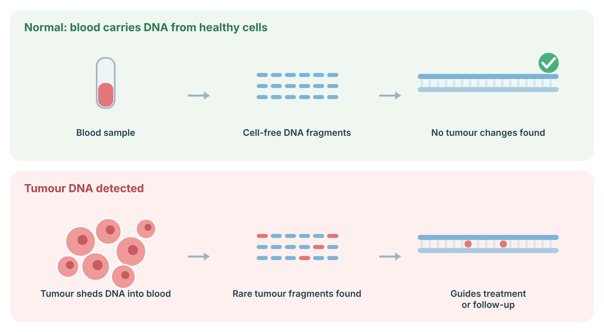
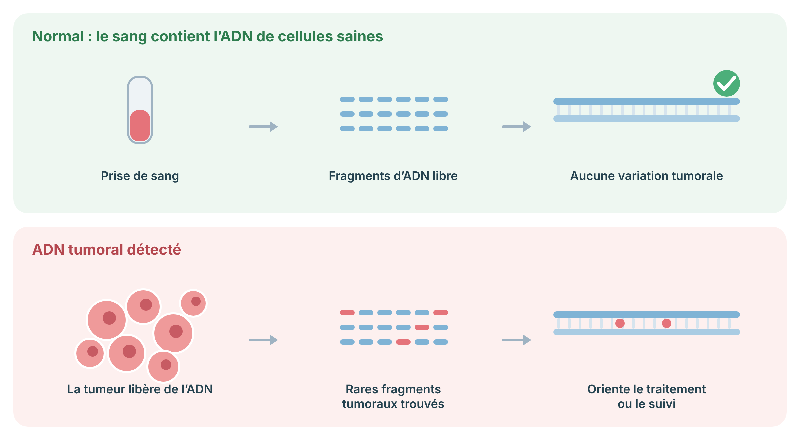

A blood test that looks for tiny pieces of tumour DNA shed into the bloodstream, used mainly to guide cancer care.
A tumour sheds small fragments of its DNA into the blood. A liquid biopsy reads these fragments from an ordinary blood sample, without needing to remove a piece of the tumour itself. It is used mainly to look for changes in a cancer that can guide treatment, and to follow how a cancer is responding over time.
Blood carries small fragments of DNA released by cells throughout the body. Tumours also shed DNA (circulating tumour DNA, ctDNA), which carries the tumour’s mutations. A liquid biopsy reads these fragments to find tumour changes that can guide treatment, track response or detect recurrence. A negative result does not always rule out cancer, because some tumours shed very little DNA.

Sources: Cescon DW, et al. Nat Cancer 2020;1:276–90 (PubMed).
The laboratory searches the blood for tumour DNA and reads it for specific changes. This is a test of the cancer (a somatic, or acquired, change in the tumour), not of the DNA you were born with. It is different from germline genetic testing, which looks at the inherited DNA in every cell. Liquid biopsy is most often used when a tissue sample is hard to obtain or to track a known cancer.
If a liquid biopsy suggests a change that might be inherited, your team may recommend separate germline genetic testing on a blood or saliva sample to sort out whether it runs in the family. The two kinds of test answer different questions.
| Term | In plain language |
|---|---|
| Gene | One “recipe” in your DNA — the instructions for one job. |
| Variant | A change in the spelling of a gene; a “typo.” May or may not matter. |
| Chromosome | A package your DNA is organised into. You have 46. |
| Sequencing | Reading DNA letter by letter. |
| Screen vs. diagnosis | A screen gives a chance; a diagnostic test gives a clearer yes-or-no. |
| VUS | A variant of uncertain significance: an effect not yet known. Not used to guide care. |
This is general education and does not replace a consultation. Which test is right for you, and what your result means, is decided together with your genetics team.
Une analyse sanguine qui recherche de minuscules fragments d'ADN tumoral libérés dans le sang, utilisée surtout pour orienter les soins du cancer.
Une tumeur libère de petits fragments de son ADN dans le sang. Une biopsie liquide lit ces fragments à partir d'une simple prise de sang, sans avoir à prélever un morceau de la tumeur elle-même. Elle sert surtout à rechercher, dans un cancer, des changements qui peuvent orienter le traitement, et à suivre la réponse du cancer dans le temps.
Le sang contient de petits fragments d’ADN libérés par les cellules de tout le corps. Les tumeurs libèrent aussi de l’ADN (ADN tumoral circulant, ADNtc), qui porte leurs mutations. Une biopsie liquide lit ces fragments pour trouver des variations tumorales qui peuvent guider le traitement, suivre la réponse ou détecter une récidive. Un résultat négatif n’exclut pas toujours un cancer, car certaines tumeurs libèrent très peu d’ADN.

Sources : Cescon DW, et al. Nat Cancer 2020;1:276–90 (PubMed).
Le laboratoire cherche dans le sang l'ADN tumoral et le lit à la recherche de changements précis. C'est un test du cancer (un changement somatique, ou acquis, dans la tumeur), et non de l'ADN avec lequel vous êtes né. C'est différent du test génétique germinal, qui examine l'ADN hérité présent dans chaque cellule. La biopsie liquide est surtout utilisée quand un échantillon de tissu est difficile à obtenir, ou pour suivre un cancer connu.
Si une biopsie liquide suggère un changement qui pourrait être héréditaire, votre équipe peut recommander un test génétique germinal distinct sur un échantillon de sang ou de salive pour déterminer s'il court dans la famille. Les deux types de test répondent à des questions différentes.
| Terme | En langage simple |
|---|---|
| Gène | Une « recette » dans votre ADN — les instructions pour une tâche. |
| Variant | Un changement dans l'orthographe d'un gène; une « faute de frappe ». Peut compter ou non. |
| Chromosome | Un paquet dans lequel votre ADN est organisé. Vous en avez 46. |
| Séquençage | Lire l'ADN lettre par lettre. |
| Dépistage vs diagnostic | Un dépistage donne une probabilité; un test diagnostique donne un oui-ou-non plus clair. |
| VSI | Un variant de signification incertaine : un effet pas encore connu. Non utilisé pour guider les soins. |
Ceci est de l'information générale et ne remplace pas une consultation. Le test qui vous convient, et ce que votre résultat signifie, se décident avec votre équipe de génétique.